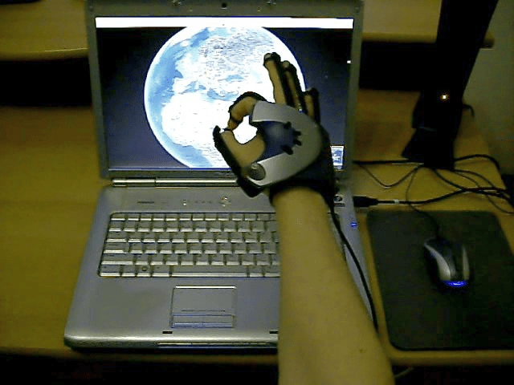
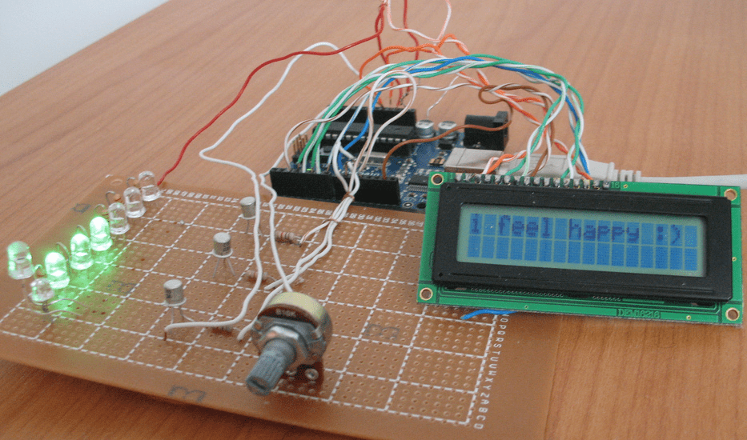

Data publicării: 20.01.2017
Autor articol: Sabin Buraga
Preambul
Ca dezvoltatori de aplicații – disponibile la nivel de desktop și/sau Web, incorporate în diverse echipamente/instrumente, oferite la nivel mondial de tehnologiile telefoniei mobile sau destinate unor utilizatori specifici în arii specializate (e.g., medici, piloți de nave aeronautice/navale, cercetători în domeniul fizicii nucleare etc.) – ne confruntăm actualmente cu o multitudine de (tipuri de) controale de interacțiune și cu proliferarea interacțiunilor naturale – denumite și neconvenționale –, mai ales via senzori și/sau dispozitive fără fir (Safer, 2009).
Software-ul are tot mai mult un profund caracter social, masa de utilizatori crescând fără precedent. Suplimentar, există așteptări tot mai mari, una dintre cerințe fiind aceea ca aplicațiile să prezinte și să asigure o experiență cu caracter familiar, acesta fiind şi unul dintre factorii-cheie de evaluare a utilizabilității unui sistem computațional.
De asemenea, asistăm la apariția unei multitudini de metafore și de idiom-uri de interacțiune, concretizate prin tipuri/stiluri familiare – recognoscibile – de interfețe, fiecare având propriul vocabular de obiecte, acțiuni, înfățișări etc., cu implicaţii importante în ceea ce privește crearea unei anumite experiențe – deseori, unice – utilizatorului. Astfel, în activitățile cotidiene mediate de calculator ne confruntăm uzual cu formulare, editoare de text, vizualizatoare sau editoare de conținut grafic sau multimedia, foi de calcul, navigatoare Web, calendare, jocuri cu caracter imersiv, spații virtuale sociale, aplicații de comerț electronic în contextul – mai larg – al afacerilor digitale (e-business).
Factorul uman în interacțiunea naturală
Din punctul de vedere al utilizatorului, recurgerea la un instrument (fie el software sau nu) trebuie să prezinte o motivație – conștientă ori inconștientă.
Drept exemple tipice, se pot enumera următoarele:
- găsirea unei entităţi – e.g., o informaţie precum perioada de desfășurare a unui eveniment cu caracter tehnologic sau un așa-zis “obiect” (in)tangibil – un artefact multimedia, o persoană cu care colaborăm, o aplicație Web oferind o funcționalitate specifică, un punct geografic de interes etc.,
- învăţarea (mediată de calculator),
- realizarea unui proces – precum o tranzacție bancară,
- participarea la interacțiuni sociale – de exemplu, angajarea în cadrul grupului de interes în realizarea unui experiment științific (e.g., via MyExperiment.org) sau stabilirea de legături mai strânse la nivel organizațional în vederea unei colaborări ulterioare,
- crearea unui artefact: însemnare pe un blog precum WordPress sau la nivel de micro-blog (un exemplu tipic este Twitter), fotografie, comentariu privind calitatea unui produs, punerea unui articol la dispoziția publicului etc.,
- divertismentul solitar sau la nivel de grup – a se avea în vederea dezvoltarea exponențială a domeniului game computing.
Aici intervine cu precădere experiența autotelică – activitate de sine-stătătoare care nu este realizată în așteptarea unui beneficiu viitor, ci pentru că însăși realizarea ei reprezintă o recompensă (Marhan, 2008). Multe dintre aplicațiile actuale (fie ele disponibile la nivel de Web sau pe o platformă mobilă), recurgând în unele cazuri la mijloace de interacțiune naturală, facilitează intrarea în starea de flux (Csikszentmihalyi, 1996) – implicând, așadar, activ utilizatorul.
Un aport important îl are emoția. Aceasta prezintă un caracter intențional, implicând o relație cu un obiect particular. Ca aspect funcțional, emoțiile pot conduce la realizarea unei/unor acțiuni și pot cauza ori contribui la nașterea unei trăiri, a unei stări mentale (mood). De remarcat faptul că, într-o interacțiune dintre utilizator și un obiect (software ori dispozitiv), stările emoționale înrudite trebuie conectate pentru a se realiza starea de flux – dezirabil: menținerea acestei stări cât mai mult timp posibil pentru a facilita productivitatea și/sau senzația de bine a utilizatorului ori a unui grup de utilizatori.
Tipuri de interacțiune naturală
Principalele tipuri de interacțiuni naturale consideră următoarele (Buraga et al., 2009):
- interfețele haptice – bazate pe senzații tactile (Kortum, 2008); ca intrare (input), poate fi considerat ecranul și/sau tabla haptic(ă) care permite „atingerea” obiectelor digitale, iar drept output neconvențional se pot exemplifica sistemele bazate pe vibrații; în acest context, se pot menționa și interfețele pseudo-haptice – acțiuni precum atingerile, vibrațiile etc. sunt emulate/simulate prin software;
- interacțiunea bazată pe gesturi – inspirată de interacțiunile non-verbale, alternativă la interacțiunea clasică; vizează gesturi generate de mână sau cele faciale, dar poate considera și postura corpului uman, fiind larg folosite în contextul consolelor de jocuri, laptop-urilor și terminalelor mobile cu caracter autonom (e.g., smart phone, tabletă);
- interfețele locomotorii – oferă sau simulează mijloace de deplasare a utilizatorului într-un mediu real sau virtual, fiind utilizate în special în cadrul jocurilor electronice sau sistemelor cu caracter terapeutic;
- interfețele audio și vocale – facilitează prezentarea datelor la nivel sonor sau preluarea input-ului bazat pe voce; de interes este reprezentarea simbolică și semantică a informației la nivel sonor via metofore/idiomuri sonore: auditory icons, earcons sau spearcons (Kortum, 2008);
- interacțiunea tangibilă – dă formă fizică (palpabilă) informațiilor digitale, acestea digitale putând fi percepute și manipulate direct – detalii în (Kortum, 2008).
Provocări și exemple de interacțiune naturală cu sistemele computaționale
Studii de caz
Mijloacele de interacțiune naturală pot fi exemplificate în mai multe studii de caz originale. Acestea au fost realizate cu precădere în cadrul disciplinei „Interacțiune om-calculator” (Buraga, 2016), predată la Masterul de Ingineria Sistemelor Software, la Facultatea de Informatică a Universității „Alexandru Ioan Cuza” din Iași.
Două dintre rezultate sunt prezentate în continuare și urmăresc:
- accesul la diverse servicii disponibile pe Web cu exploarea de conținuturi cartografice pe baza serviciului Google Earth via o mănușă senzorială;
- captarea și împărtășirea emoțiilor folosind soluția hardware Arduino.
O listă a unor proiecte de interes poate fi consultată pe Web la adresa http://profs.info.uaic.ro/~stefan.negru/studentprojects/.
Interacțiunea prin intermediul gesturilor cu serviciul Google Earth
Ne propunem să realizăm în cele ce urmează o analiză asupra aspectelor de luat în considerare în proiectarea interacțiunii cu un mediu 3D – aici, cel oferit de serviciul Google Earth. Sunt propuse soluții de proiectare, implementate ulterior sub forma unui script (program) de interacțiune cu o mănușă interactivă (data glove).
Primul aspect de considerat în interacțiunea cu o astfel de mănușă senzorială este faptul că un dispozitiv de localizare ținut în sau pe mână poate genera mult „zgomot” informațional cauzat de tremurul involuntar al mâinii. Majoritatea utilizatorilor sunt complet inconștienți de acest factor până în momentul în care sunt confruntați direct cu erori vizând manipularea directă și acuratețea gesturilor/acțiunilor de efectuat. Astfel, în loc să producă mișcările așteptate sau chiar să păstreze poziția fixă, dispozitivul poate genera mișcări nedorite, captate de către aplicaţie, transformate apoi în acțiuni ce pot cauza frustrarea utilizatorului, dacă acesta este expus prea mult timp.
O soluție pentru o astfel de problemă este de obicei filtrarea datelor captate de către dispozitiv. Două exemple de astfel de filtre sunt cele de mediere (averaging) și privind zona neutră de interacțiune (dead band). Este necesar un echilibru cât mai potrivit între valorile prestabilite pentru aceste două filtre, pentru a oferi o sensibilitate cât mai bună pentru detectarea mișcărilor utilizatorului, fără a introduce o latență observabilă. De asemenea, aceste valori nu trebuie să fie tot timpul globale. Unele dintre acțiuni au un impact mai mare decât altele și necesită reglaje individuale.
O altă problemă cunoscută a interfețelor care necesită ca utilizatorul să țină mâna în aer este aceea că vor cauza, în mod inevitabil, un sentiment de disconfort ce crește odată cu timpul de utilizare, conducând la oboseală.
O soluție ar fi facilitarea folosirii sistemului de către utilizator cu cotul sprijinit pe masă sau pe un suport fix. Aceasta înseamnă că aplicația trebuie să ofere suport pentru continuarea automată a unor acțiuni ce ar necesita ca utilizatorul să își ridice cotul de pe masă sau care s-ar efectua repetat și incremental. Această soluție este implementată pentru toate acțiunile disponibile.
Suplimentar, se propune un sistem de interacțiune bazată pe gesturi așteptând ca utilizatorul să specifice când o acțiune începe și când se termină, combinat cu posibilitatea continuării acțiunilor repetitive. Avantajul major este acela că utilizatorul are o mai mare libertate de mișcare și un control mai bun asupra celor ce se întâmplă în aplicație.
Mulțimea de acțiuni care pot fi asociate este constrânsă de numărul de comenzi rapide cu tastatura puse la dispoziție de interfața 3D dintre utilizator și serviciul Google Earth. Se oferă trei acțiuni principale: „Mișcarea globului”, „Îndepărtarea sau apropierea perspectivei” (zooming) și „Privitul în jur” (explorare).
Un exemplu de interacțiune bazată pe gesturi este ilustrat de figura alăturată.

În dezvoltarea unei astfel de aplicații, trebuie considerate atât naturalețea și intuitivitatea gesturilor, cât și evitarea suprasolicitării utilizatorului.
Captarea stării emoționale a utilizatorului via dispozitivul Arduino
Descriem în continuare un sistem interactiv realizat pentru îmbunătățirea interacțiunii dintre utilizatori, din prisma împărtășirii unui anumit număr de emoții via dispozitivul hardware deschis Arduino – mai multe detalii, în (Negru, 2010).
Scopul experimentului ce va fi descris mai jos este de a face interfața cu utilizatorul mult mai umană, dar și mai productivă, prin stabilirea unei comunicări mult mai naturale între om și calculator. Un prim pas în realizarea acestei comunicări este identificarea și transmiterea de emoții prin intermediul unui dispozitiv atașat calculatorului. S-a recurs la platforma hardware Arduino, pentru care s-a realizat un circuit special incluzând diverse componente electronice, precum Light-Emitting Diode (LED) și un ecran Liquid Crystal Display (LCD) pentru a simula o astfel de interacțiune.
Pentru ca sistemul să reflecte în mod adecvat emoțiile, s-a ales ca metaforă culoarea. Mai precis, se realizează diverse combinații de culori, folosind modelul RGB (roșu, verde și albastru):
- verde – folosit pentru a exprima fericirea;
- roșu – utilizat pentru a simboliza tristețea;
- albastru – folosit în combinație cu alte culori (de exemplu, împreună cu roșu, caz în care poate exprima furia).
Combinând culorile, vom acoperi o gamă mai largă de emoții. Aceste culori sunt redate cu ajutorul LED-urilor, care totuși nu reprezintă o metaforă puternică, uneori existând confuzii în ceea ce privește semnificaţia combinațiilor de culori. Astfel, se include și un ecran LCD pentru a „întări” mesajul transmis de LED-uri utilizatorului. Suplimentar, potențiometrul oferit are rolul de a testa elementele de mai sus, astfel asigurând buna funcționare a sistemului.
Interacțiunea e facilitată de o aplicație Web – în funcție de opțiunile selectate ca și răspuns la un set de întrebări, acesta va „influența emoțional” sistemul.
Toate aceste elemente sunt conectate la dispozitivul Arduino – a se urmări figura de mai jos.

Acesta este cel care realizează și comunicarea cu partea software a sistemului. Ultima componentă – cea socială – este dată de transmiterea emoțiilor utilizatorului prin intermediul bine-cunoscutei aplicații Twitter. Diversele amănunte sunt disponibile în (Buraga et al., 2009), iar demonstrațiile privind sistemul prezentat pot fi urmărite la adresele Web http://www.vimeo.com/4563793 și http://www.vimeo.com/4930674.
Concluzii
Articolul de față a prezentat o serie de consideraţii vizând interacțiunea om-calculator naturală. Studiile realizate – desfășurate în cadru academic organizat – au luat în considerație interactivitatea în contextul instrumentelor „atipice”, dar deja ubicue, pentru acces la servicii Web publice, cu potențiale utilizări atractive în mediul IT.
Referințe bibliografice
- Buraga, S. Situl Web al disciplinei Human-Computer Interaction, 2016 – http://profs.info.uaic.ro/~busaco/teach/courses/hci/.
- Buraga, S. et al., „Mijloace de interacțiune om-calculator neconvențională. Considerații generale și studii de caz”, Revista Română de Interacțiune Om-Calculator, Volumul 2, Numărul 1. Matrix Rom, 2009.
- Csikszentmihalyi, M. Flow and the psychology of discovery and invention, Harper Collins, 1996.
- Kortum, P. (Editor). HCI Beyond the GUI. Elsevier, 2008.
- Marhan, A., „Starea de flux: implicaţii în utilizarea noilor tehnologii”. Revista Română de Interacțiune Om-Calculator, Volumul 1, Numărul 1. Matrix Rom, 2008.
- Negru, S., “A conceptual architecture of an arduino-based social-emotional interactive system”, Intelligent Computer Communication and Processing (ICCP), 2010 IEEE International Conference on. IEEE, 2010 – http://ieeexplore.ieee.org/abstract/document/5606459/
- Saffer, D. Designing Gestural Interfaces. O’Reilly Media, 2009.
- * * *, Arduino – http://arduino.cc/
- * * *, Google Earth – http://www.google.com/earth/